三銃士
旧掲載時の初回公開：
旧掲載時の内容更新：
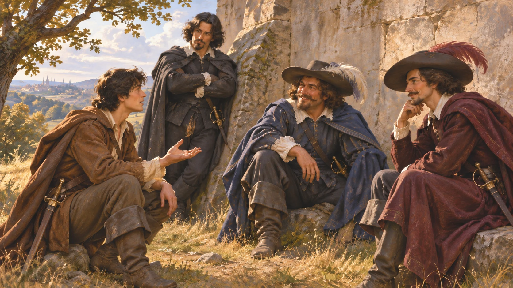
挿絵・人物画はAI生成の創作です。外見や場面の細部は想像によります。
登場人物
物語の中心となる四人
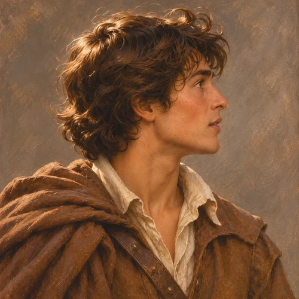
ダルタニャン（d’Artagnan）
銃士を志してパリへ来る若者。腕と勇気を認められたい気持ちが強く、行動が先に立つこともあります。
アトス（Athos）
三銃士の一人。負傷した状態でダルタニャンと対面します。決闘前の礼儀ある応答にも目を向けられます。
ポルトス（Porthos）
三銃士の一人。堂々とした体格と装いが印象的。服装をめぐるやり取りが、ダルタニャンとの衝突につながります。
アラミス（Aramis）
三銃士の一人。聖職への思いも語る人物。人前で触れてほしくない事情と、相手への態度の関係が描かれます。
四人を取り巻く人々
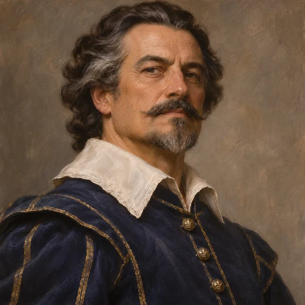
トレヴィル（de Tréville）
国王の銃士隊の隊長。ダルタニャンが最初に頼ろうとする人物です。
コンスタンス・ボナシュー（Constance Bonacieux）
家主の妻で、王妃に仕える女性。秘密の連絡や道案内を担い、自分で判断して行動します。
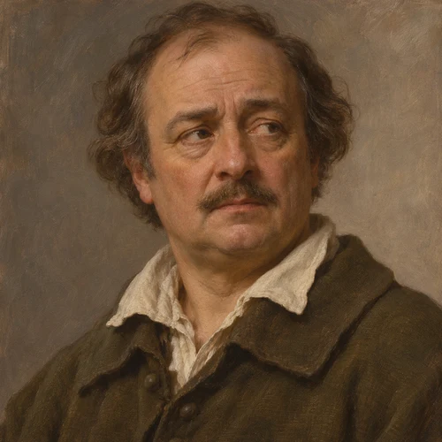
ボナシュー（M. Bonacieux）
ダルタニャンの家主。妻の失踪を相談しますが、逮捕後に立場が変わっていきます。
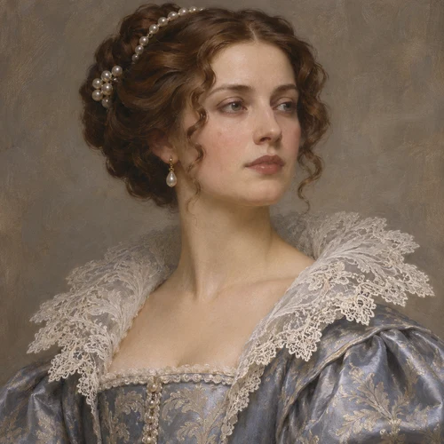
王妃アンヌ・ドートリッシュ（Anne d’Autriche）
国王や枢機卿との緊張の中で、公爵との秘密を抱えるフランス王妃。
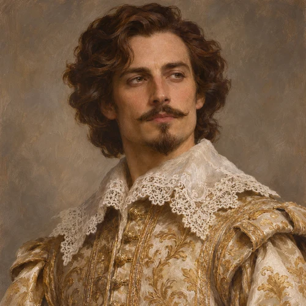
バッキンガム公爵（duc de Buckingham）
王妃との面会を望むイングランドの有力者。国をまたぐ秘密の一方にいます。
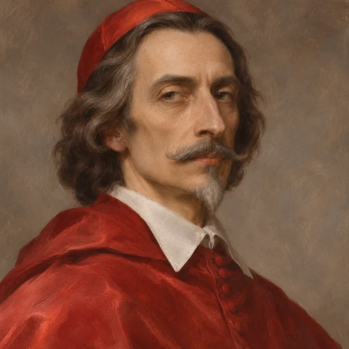
枢機卿リシュリュー（Richelieu）
国王に仕え、情報と人の弱みを用いて王妃を追い込む策を進めます。
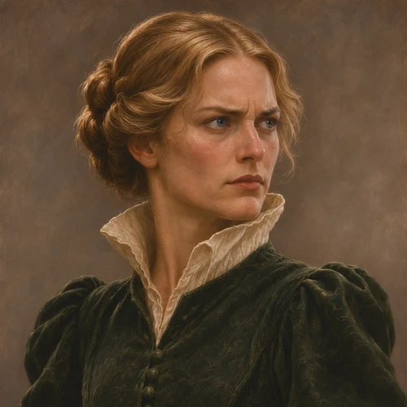
ミレディ（Milady）
ロンドンで枢機卿の指示を受ける女性。
プランシェ（Planchet）
ダルタニャンの従僕。旅に同行し、道中の行動や連絡で主人を支えます。
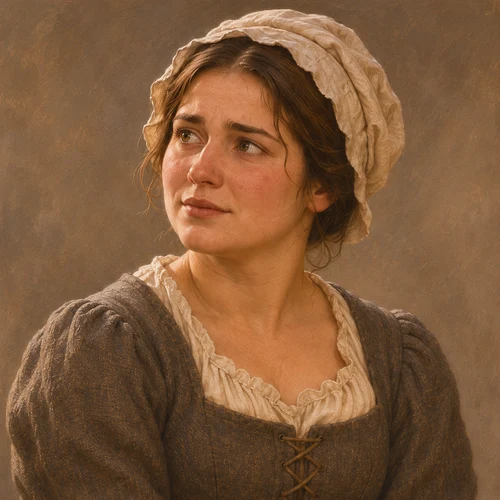
ケティ（Ketty）
ミレディに仕える侍女。青年へ心を寄せる一方、主人と青年の関係の中で弱い立場に置かれます。
グリモー（Grimaud）
アトスの従僕。主人の命令に従う立場で、危険な行動へも巻き込まれます。
フェルトン（Felton）
英国の若い士官。ウィンター卿の命令でミレディの監視を担います。
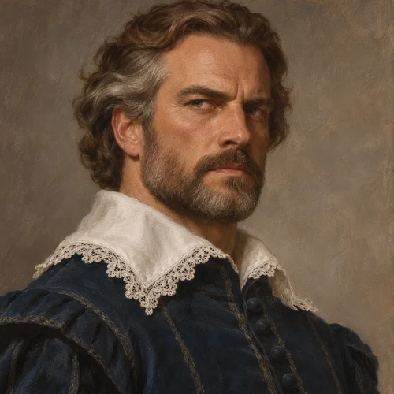
ウィンター卿（Lord de Winter）
英国の貴族。ミレディの亡夫の兄弟にあたり、彼女を警戒します。
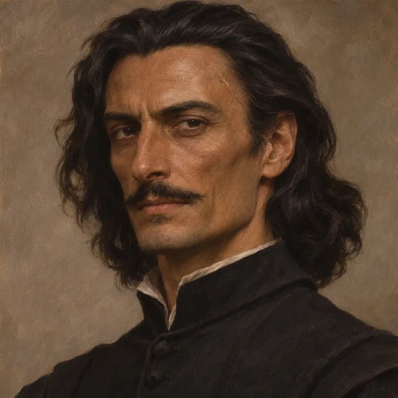
ロシュフォール（Rochefort）
枢機卿に仕える人物。旅の初めから青年の前に現れ、情報や連絡を担います。
あらすじ物語の入口
17世紀のフランス。銃士を志す若者ダルタニャンは、父の紹介状を持ってパリへ向かいます。誇りの高さと気の短さが騒動を招き、アトス、ポルトス、アラミスとの出会いも衝突から始まります。やがて三人と結び付いた彼を、王妃に仕える女性との出会いが、宮廷の秘密へ導いていきます。 題名の「三銃士」はアトス、ポルトス、アラミスの三人。物語の初めにはまだ正式な銃士ではないダルタニャンが加わり、四人の関係が物語を動かします。剣の腕だけでなく、人を見誤ったときに判断を変えられるかにも注目できます。
結末を含む要約を開く
ここからは物語の結末を含みます。
四人の出会いと宮廷の仕掛け
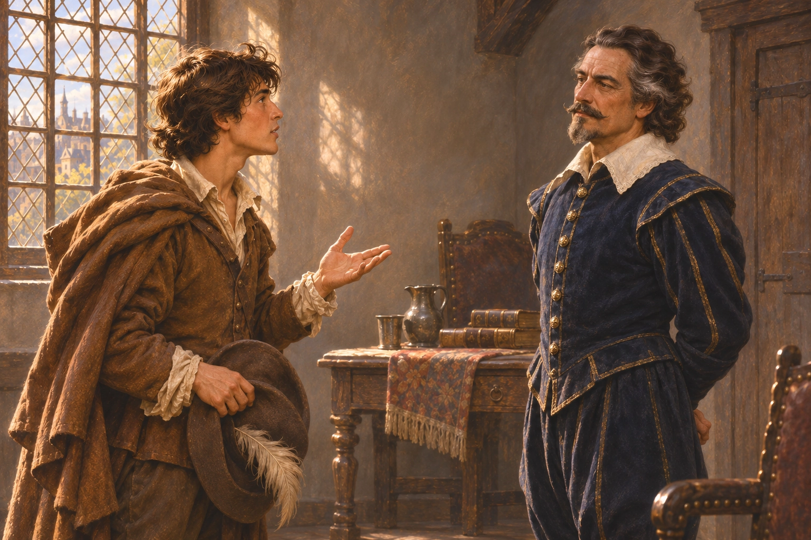
ダルタニャンは旅先で紹介状を失い、それでも銃士隊長トレヴィルを訪ねます。相次ぐ行き違いから三人の銃士と決闘する約束をしますが、枢機卿側の護衛兵が現れると三人を助ける側に立ちます。共闘をきっかけに仲間となり、国王にも認められます。ただし、勤務を始める先は別の衛兵中隊で、この段階で銃士への正式入隊を果たしたわけではありません。
家主ボナシューから、王妃に仕える妻の失踪について相談を受けます。妻コンスタンスは監禁先から自力で逃れますが、帰宅した部屋で再び捕らえられかけ、ダルタニャンに助けられます。彼女は避難させられるだけの人物ではなく、連絡先や合図を伝え、バッキンガム公爵を王妃のもとへ案内する役割も担います。青年は公爵を友人アラミスと取り違えて嫉妬しますが、相手が分かると二人の護衛へ回ります。
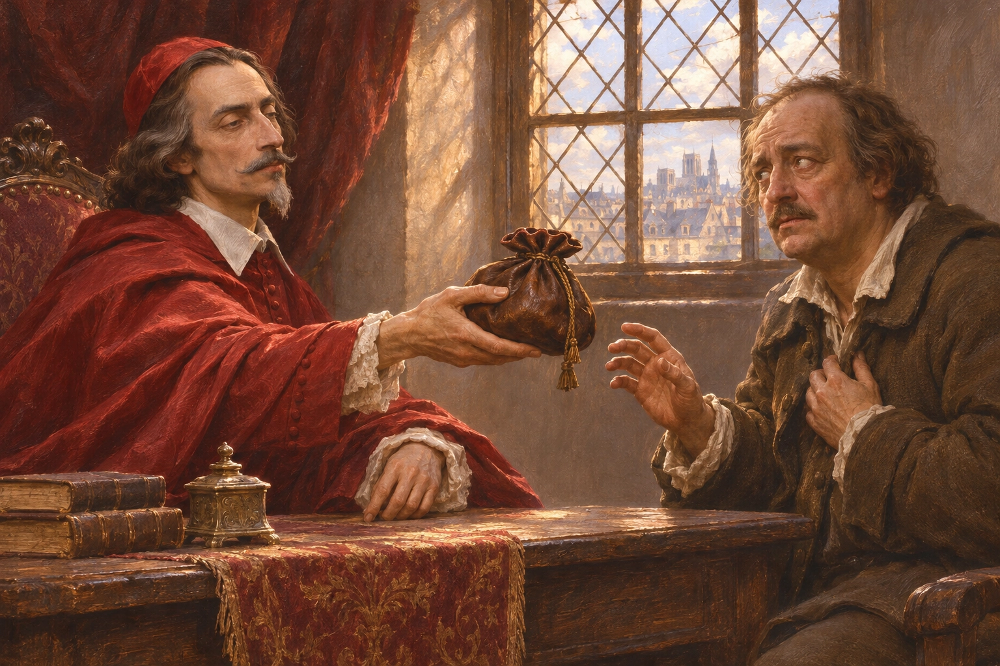
一方、ボナシューは逮捕後、枢機卿リシュリューの働きかけで妻を探る側へ取り込まれます。枢機卿は、王妃が公爵へ渡したダイヤの飾りを利用する策を進め、ミレディに二個を切り取るよう指示します。誤認で捕らえられたアトスはトレヴィルの働きかけで解放されますが、宮廷では王妃の手紙が押収されます。それは公爵宛の恋文ではなく、スペイン王宛の政治的な書簡でした。
枢機卿は国王に舞踏会を勧め、国王が王妃へ贈ったダイヤの飾りを、王妃に着けさせるよう仕向けます。ロンドンから二個を手に入れたとの返書が届くと、戻る時間を見込んで日程を整えます。友情の物語は、王妃を追い込む仕掛けへとつながっていきます。
渡英と舞踏会での決着
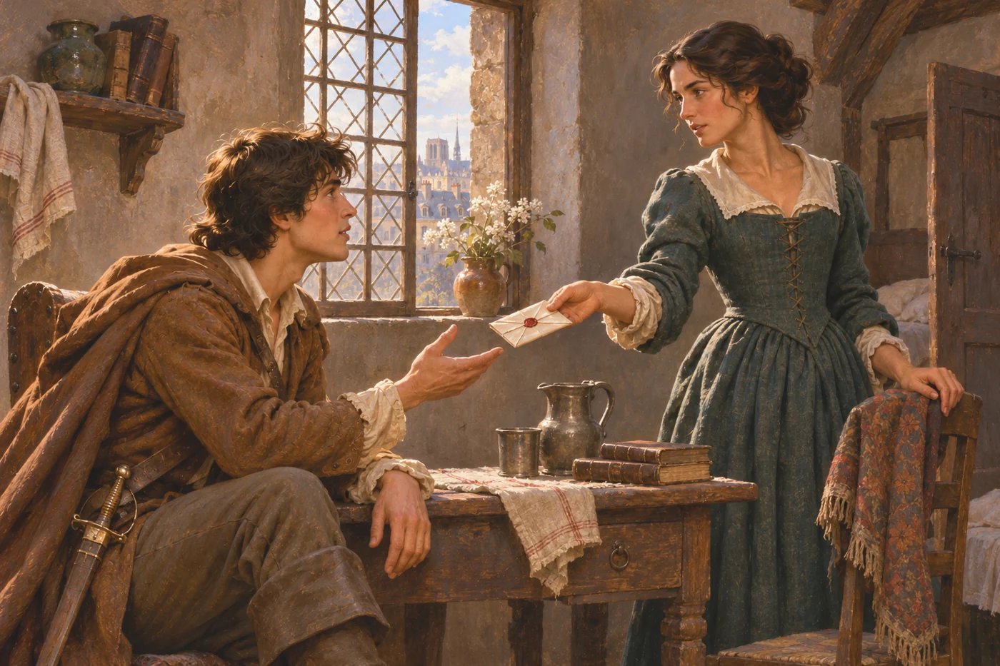
王妃はコンスタンスに公爵への手紙を託します。夫が密使を拒むと、ダルタニャンが引き受けます。旅費には、皮肉にも夫が枢機卿から受け取った金が回されます。トレヴィルは王妃の秘密を詳しく聞かずに、青年と三銃士の休暇を手配。四人は従僕たちとともに出発し、誰かが足止めされても残る者が手紙を届ける方針で旅を進めます。
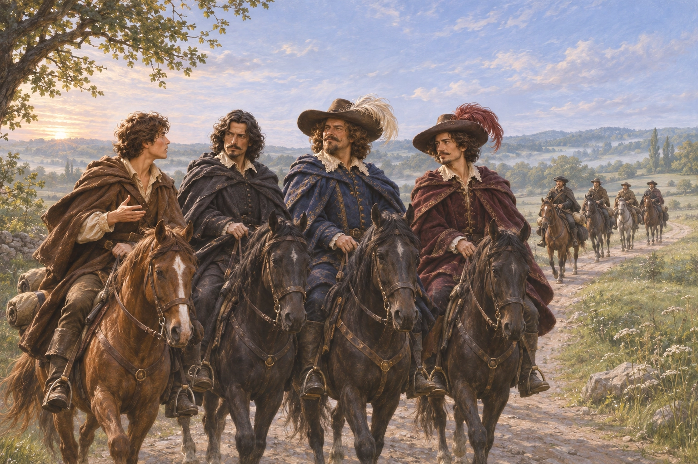
道中の妨害で三銃士は次々に足止めされ、ダルタニャンはプランシェと先へ進みます。イングランドで公爵に会い、ロンドンで飾りを確かめると、二個欠けていました。公爵は職人を監視下に置いて同じ二個を作らせ、十二個を揃えて青年に託します。失われた二個そのものを取り返したわけではありません。帰路にも船や替え馬の手配があり、青年はパリへ戻ります。
舞踏会で王妃が初めに飾りを着けていないのを見て、枢機卿は自分の策が成功すると考えます。しかし王妃はその後、十二個を揃えて登場します。枢機卿が用意した二個を国王が差し出すと、王妃はそれでは十四個になると応じ、仕掛けをかわします。ダルタニャンは人々の視線が集まる中心から離れてそれを見届け、のちに王妃から指輪を受け取ります。
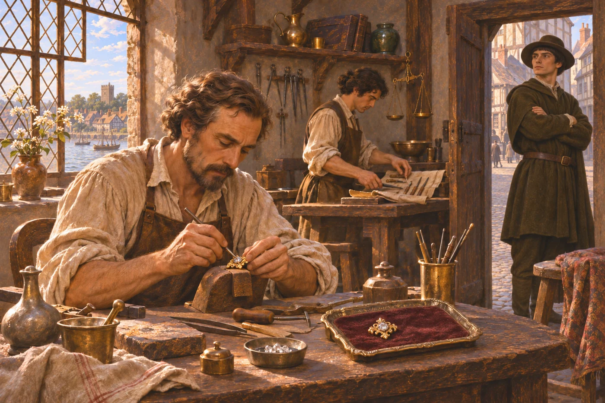
舞踏会の後、それぞれの事情へ
ダルタニャンはコンスタンスからの待合せの手紙を受け取り、サン・クルーへ向かいます。しかし建物は荒らされ、近くの老人は女性が連れ去られたと話します。青年は翌朝の家主の様子から関与を疑います。ただし、青年自身の現場目撃や家主の自白で確かめたわけではありません。トレヴィルは王妃へ探りを入れるとし、青年には旅で別れた仲間を訪ねるよう勧めます。
再会したポルトスは怪我の理由を取り繕い、アラミスは聖職へ戻る決意を語りますが、恋人からの手紙を読むと心が変わります。アトスは酒に酔い、「友人の伯爵」が妻に下した残酷な仕打ちを話します。翌朝には昔話だったとも言い、青年は彼の過去をうかがわせる言葉を聞きます。この段階では、語りのすべてを確定した経歴や妻の正体として説明できません。
仲間との再会は、金や馬の問題も伴います。アトスは他人の持ち物や従僕まで賭けの対象にし、友情を手放しで称えられない面を見せます。パリへ戻ると、トレヴィルから国王がダルタニャンの銃士隊への入隊を認めたとの通知が届きます。一方、出征に必要な装備の費用はなお不足しています。
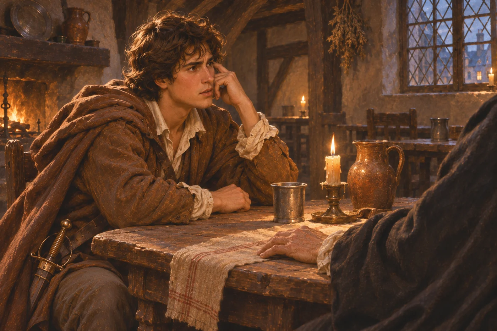
ポルトスはコクナール夫人の嫉妬を煽って援助を得ようとし、青年は教会で見つけたミレディを追います。彼女の侍女がプランシェを別人と間違えたため、ワルド伯宛の手紙が青年の手へ渡ります。青年は宛先の違いを理解して開封します。その後ミレディと英国人の口論へ介入し、ウィンター卿と友人を伴う決闘を約束します。この決闘が、ミレディとの新たな接点になります。
近づくための偽りと、その代償
決闘でダルタニャンはウィンター卿を助け、彼を通じてミレディを訪ねるようになります。ただし、同じ決闘でアトスは、自分の本名を知られた相手を秘密を守るために殺しています。二人は実の兄妹ではなく、卿は彼女の亡夫の兄弟にあたる義理の間柄です。青年は侍女ケティの恋心を利用し、手紙を手に入れて偽の返事を書きます。ケティへの圧力や、彼女の立場を利用する面もあり、楽しい恋の駆け引きだけにはできません。
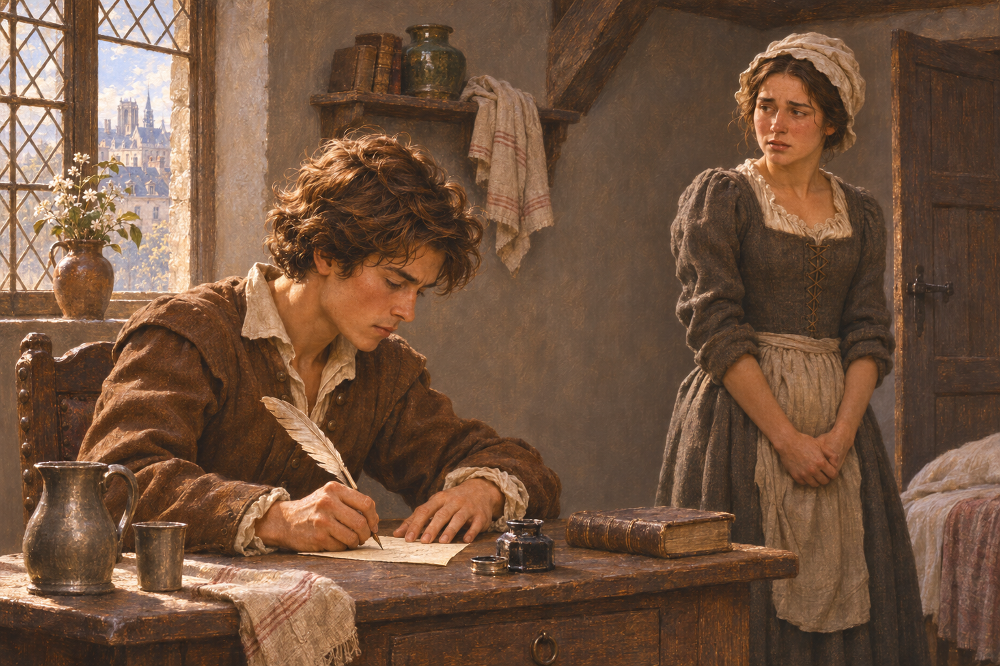
青年はワルド伯になりすましてミレディと関係を結び、サファイアの指輪を受け取ります。相手が別人だと信じていることを利用した行動です。さらに伯の名で冷たい手紙を送り、傷ついたミレディの復讐心を自分への好意に変えようとします。今度は青年本人へ接近した彼女も、ワルド伯への復讐を彼に求めます。
青年がなりすましを告白すると、ミレディは激しく怒ります。青年が彼女を引き止めた際に衣が裂け、肩の百合の印を見つけます。彼女は短剣で襲いかかります。青年はケティの助けで逃げ、アトスへ事情を話します。アトスは容姿や家伝の指輪を手掛かりに、以前語った女性とのつながりを強く意識します。ただし、この印や人物の話だけで、過去の罪や私刑の正当性まで確定したとは扱えません。
青年を逃がしたケティも危険にさらされ、家を出て保護を求めます。アラミスは地方で働くための紹介状を用意します。一方、アトスと青年はサファイアを質に入れて装備を買い、その後は買い戻すのをやめて売却します。思い出の品が現金に変わっても、彼らをめぐる危険が消えたわけではありません。
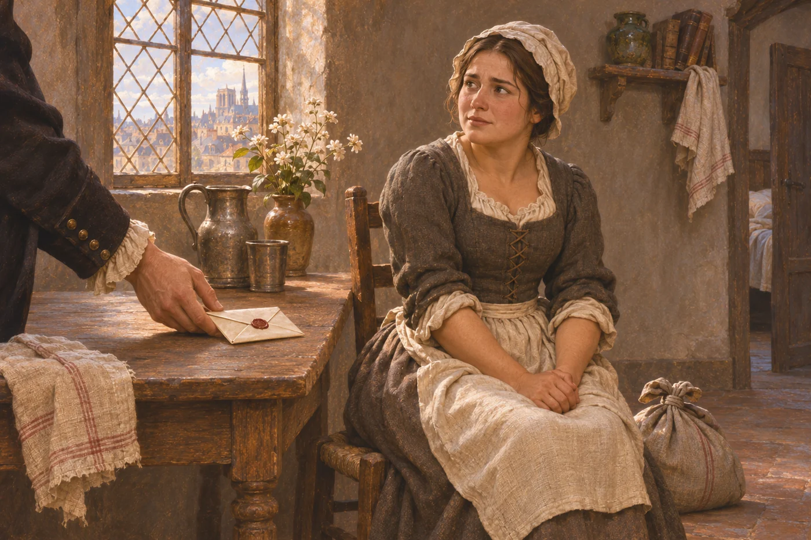
混同しやすい二つの指輪
王妃から受け取った指輪：舞踏会後、青年が受け取る品。ミレディのサファイアとは別で、第38章の金策に使った指輪ではありません。第47章で、密使を送る費用を得るため売却します。
ミレディから渡ったサファイア：青年がワルド伯になりすましていた際に受け取る品。アトスが家伝の品と認め、第38章で質入れ後に売却。売却額は合計500ピストールで、質入れの300に追加200を受け取ります。
戦場でも、私的な敵意は続く
ダルタニャンは手紙に導かれて道へ出て、馬車の中にコンスタンスらしい女性を一瞬見ますが、確信は持てません。枢機卿からは自分の衛兵隊で働くよう勧められます。青年は、今の仲間たちとの関係も考えて断ります。
ラ・ロシェルの戦場では、偵察に同行した兵士の中に青年を狙う刺客がいました。青年は一人を助命して陣へ戻りますが、もう一人を運ぶ際にはその体を盾にし、その男は被弾して死亡します。生き残った刺客の話と手紙から、コンスタンスが修道院へ逃れたらしい手掛かりも得ますが、この時点では所在は分かりません。その後、友人たちから届いたように装われた酒を飲み、ブリズモンが死亡します。青年たちは毒を疑い、ミレディへの警戒を強めます。
三銃士は宿で枢機卿とミレディの秘密の会話を聞きます。英国による支援を控えさせるため公爵を威嚇し、交渉が通じなければ暗殺も示唆する会話です。ミレディは青年への復讐も取引します。計画を知ったアトスは宿へ戻ってミレディと対面します。彼女は彼をラ・フェール伯と認め、二人がかつて夫婦だったことが会話に表れます。アトスは青年へ手を出すなと脅し、銃を突きつけて枢機卿の署名入り文書を渡させます。
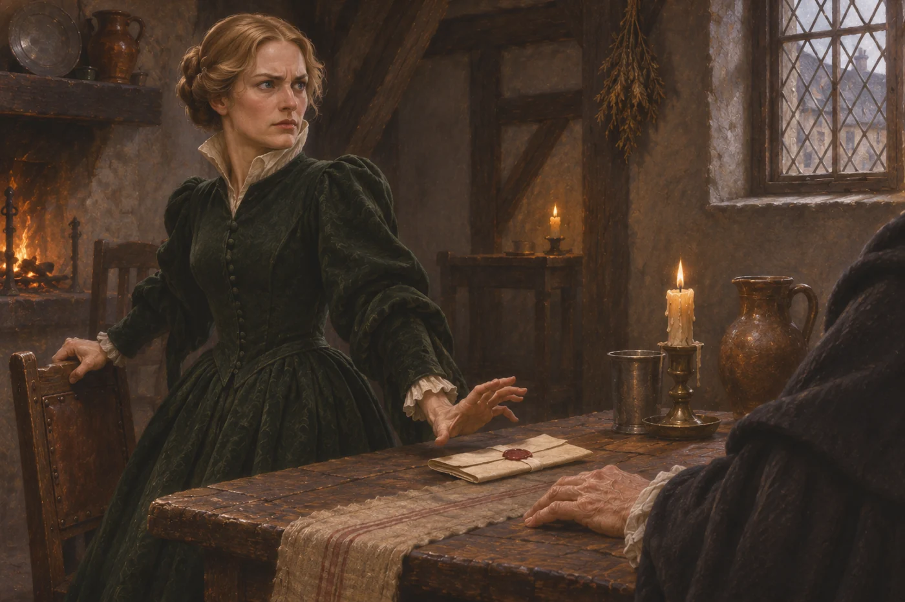
ミレディが英国へ船出した後、四人は人に聞かれず相談する場所を探します。アトスは、サン・ジェルヴェ砦で朝食を取り、一時間そこにとどまる賭けを提案します。真の狙いは密偵に会話を聞かせないことでした。しかし危険を嫌がる従僕グリモーは、アトスに銃で脅され、同行を強いられます。四人とグリモーは砦へ入り、朝食の支度を始めます。
砦の相談と、二人の使者
敵の攻撃を警戒しながら、四人はミレディへの対策を相談します。英国にいるウィンター卿へ警告し、トゥールの知人を介して王妃にも公爵への危険を知らせる方針を決めます。砦では死傷者を出す戦闘をしながら敵を退け、一時間とどまるという賭けの条件も満たしました。帰陣後、枢機卿の提案を経てダルタニャンは銃士隊へ移り、次の章では制服を身に着けます。
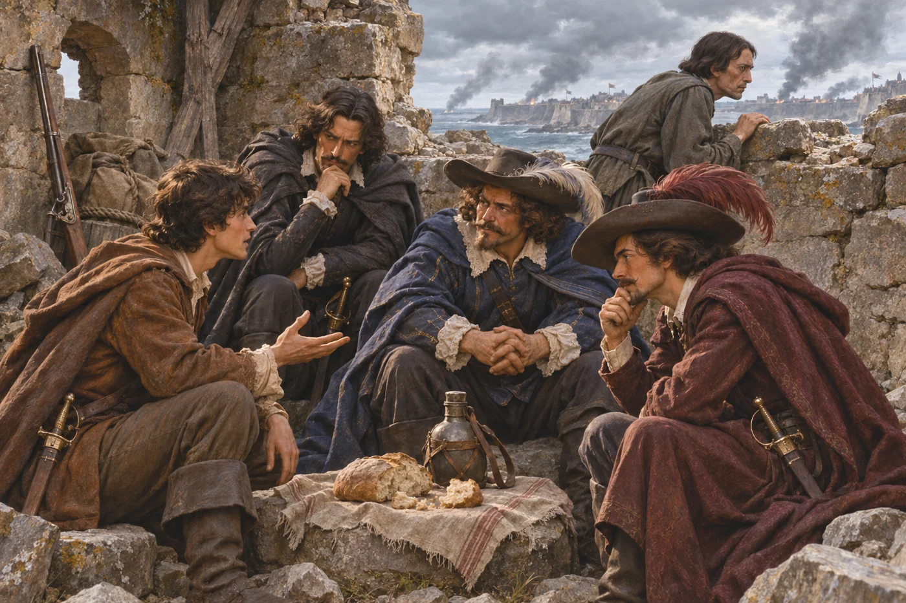
資金を得るため、青年は王妃から贈られたダイヤモンドの指輪を売ります。英国へはプランシェ、トゥールへはバザンを送りました。プランシェに託すウィンター卿宛ての書面では公爵の名を伏せ、青年は出発時に、友人にも知らせず、プランシェへバッキンガム公爵への危険を口頭で伝えるよう指示します。使者には報酬が約束される一方、プランシェは不手際で主人を危険にさらせば残酷に罰すると脅されます。二人はそれぞれ返事を持ち帰りますが、手紙が届いたことと、危険が取り除かれたことは同じではありません。
英国での拘束と、手紙をめぐる緊張
一方、ミレディは英国の港へ着いたところで、若い士官フェルトンに船から連れ出され、ウィンター卿の城へ運ばれます。卿は過去や相続への疑惑を突きつけ、彼女を監禁して、後に植民地へ送ると告げます。逃亡を試みれば撃つとも脅し、フェルトンに厳重な監視を誓わせます。ここで示されるのは卿による拘束と処置の予告で、法廷で審理された確定判決が描かれているわけではありません。
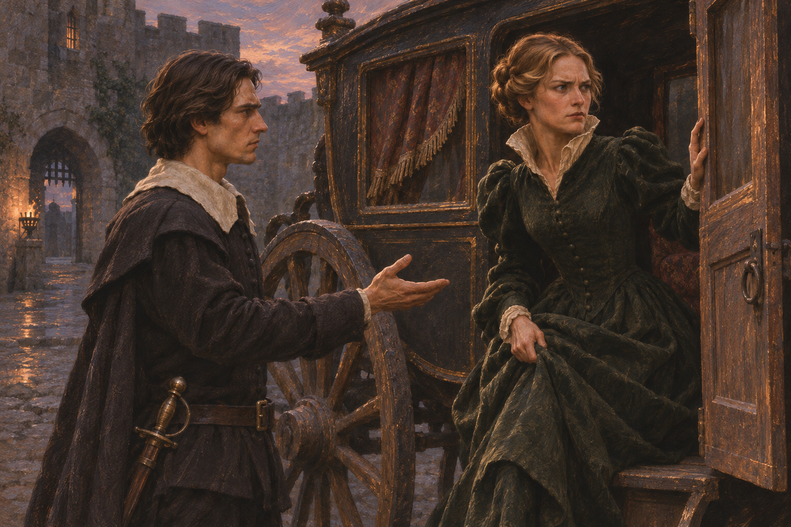
戦地の四人の前には枢機卿が現れます。読んでいた手紙をめぐって緊張が走りますが、衝突には至りません。暗号めいた手紙から、青年はコンスタンスの消息について希望を読み取ります。その後、グリモーはアトスに命じられ、手紙を食べて処分します。秘密を守る場面にも、従僕に選択の余地が乏しい関係が表れています。
ミレディは監視下で逃れる道を探り、フェルトンの反応をうかがいます。倒れる演技をしても、彼は距離を保って卿を呼びます。それでも彼女は、彼の気持ちへ働きかける余地があると見込みます。第52章では、その試みが始まった段階にとどまります。
監視する人の心が動く
ミレディは宗教的な言葉や振る舞いを使い、フェルトンに自分を迫害される仲間だと思わせようとします。ウィンター卿は彼女の演技を警戒し、フェルトンにも注意を促します。卿が示すのは偽名を使った未署名の移送命令案で、署名も執行もこれからだと告げられます。第54章の夜もフェルトンは部屋へ入らず、監視を続けています。それでも、疑いを持っていた士官の心は、次第に彼女の方へ傾いていきます。
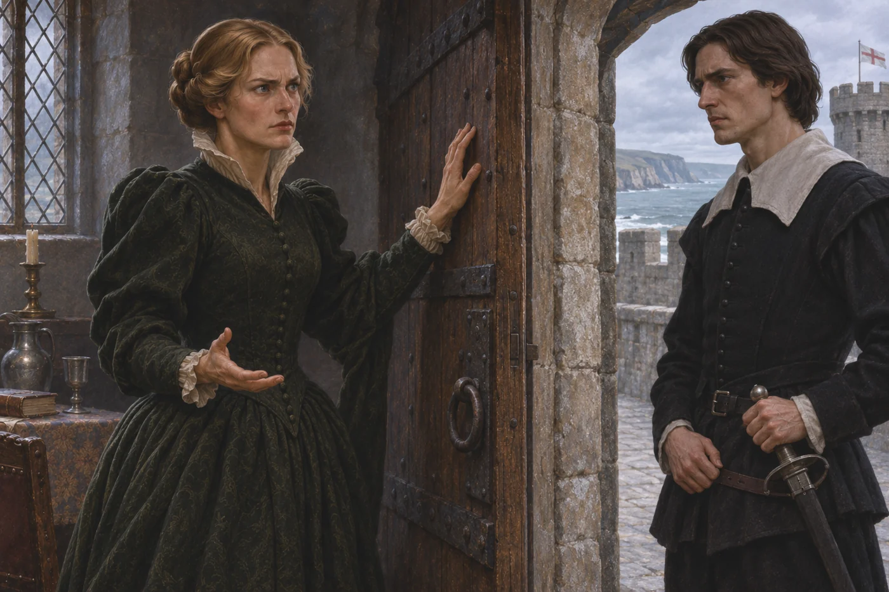
彼女は監禁や暴力を受けたという過去を語り、肩の印をその被害の証しとして見せます。フェルトンはその話を信じ、加害者だと示されたバッキンガム公爵への怒りを強めます。けれども語り手は、彼女が相手の反応を見ながら話を組み立てる様子も描いています。彼女が語る被害談を、そのまま確認済みの出来事として受け取ることはできません。
脱出の成功と、その先の計画
卿が部屋へ来ると、ミレディは自ら傷を負います。フェルトンは彼女が死んだと思いますが、実際には生きており、医師も呼ばれます。卿は監視を替えて彼女の移送を進めようとします。それでも嵐の夜、フェルトンは城へ戻り、彼女の脱出を助けます。二人は小艇を経て、彼が手配した船へ移りました。
フェルトンは公爵への文書を持ち、ポーツマスへ向かおうとします。公爵を出航させないという彼の言葉から、ミレディはその殺意を読み取ります。二人は湾で別れ、彼が戻らなければ彼女はフランスへ出発し、後にベテューヌの修道院で会うと約束します。第58章の時点では城からの脱出までで、公爵への計画の実行やフランスでの再会は、まだ先の展開です。
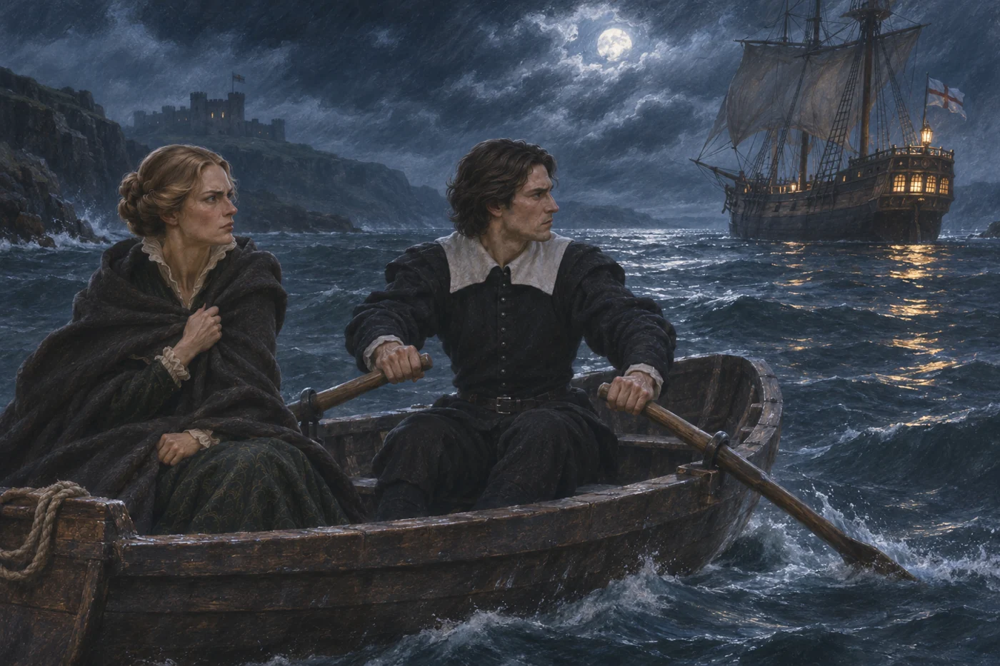
警告は間に合わず、修道院へ
フェルトンはウィンター卿からの使者として公爵に近づき、刺します。王妃の警告を携えたラ・ポルトも到着しますが、手紙と口頭の伝言が公爵に伝わるのは襲撃の後でした。卿も駆けつけますが、公爵を救うには遅く、公爵は亡くなります。連絡を届けることと、人を守りきることの間に、取り返せない時間の差が生じました。
フランスへ渡ったミレディは、ベテューヌの修道院でコンスタンスと出会います。コンスタンスはそこでケティの名を使って保護されていました。ミレディは青年の友人だと偽り、彼女の信頼を得ます。青年たちも王妃の命令を受け、コンスタンスを迎えに向かっていました。
再会と喪失、追跡の行方
ロシュフォールとの相談を経たミレディは、近づく青年たちを危険な相手のように説明し、コンスタンスを連れ出そうとします。彼女が動けなくなると、ミレディは飲み物に毒を入れて飲ませ、逃げます。ようやく到着した青年はコンスタンスと再会しますが、彼女はまもなく命を落とします。
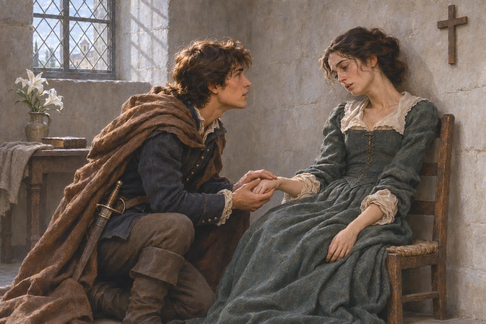
四人はウィンター卿と合流し、従僕たちの助けでミレディを追います。アトスは赤い外套の男を連れてきます。一行は彼女を捕え、各自の告発を重ねて死を宣告します。赤い外套の男はリールの処刑人でした。彼の語る過去によると、ミレディの肩の印は、彼が弟のための報復として付けたものです。印があることだけを、彼女に正式な有罪判決が出ていた証拠にはできません。
ミレディは一行に裁く資格があるのかと問い、法廷へ連れて行くよう求めます。青年も処刑を止めかけますが、アトスが阻み、彼女は処刑されます。敵を追い詰めた達成感だけで閉じず、告発する側が裁く側にもなっている場面として読む余地があります。
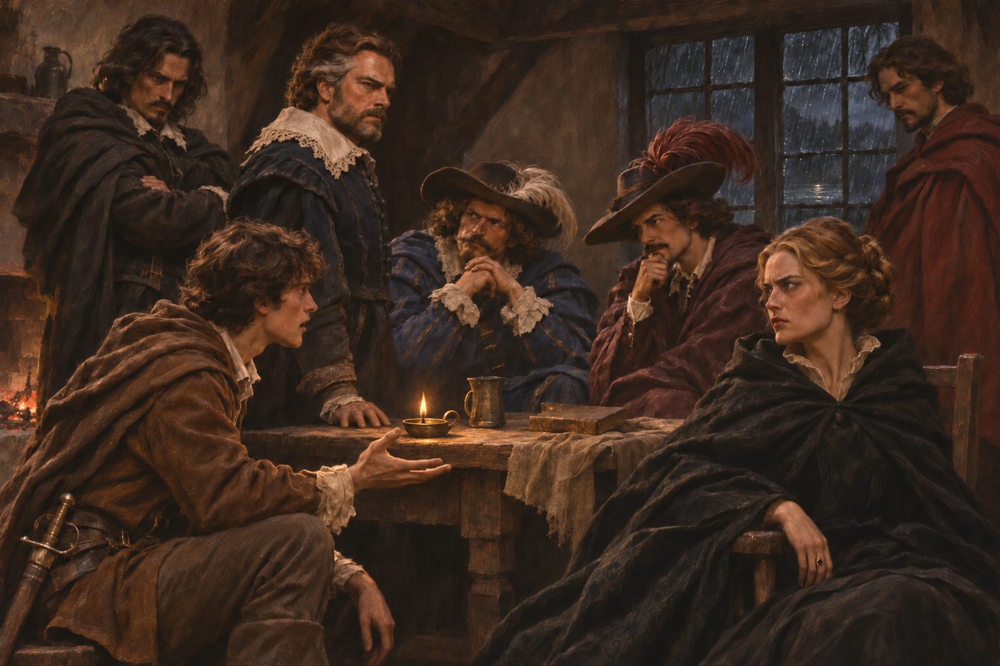
昇進しても、戻らないもの
青年はロシュフォールに逮捕され、枢機卿の前へ出ます。仲間たちとの私的な裁きと処刑を認め、アトスがミレディから得た署名入り文書を差し出します。枢機卿はその紙を破りますが、代わりに名前の欄が空いた銃士隊の士官への任命状を渡します。青年は三人の友人に譲ろうとするものの、誰も受け取らず、最後にアトスが青年の名を書き入れます。
エピローグでは青年がその地位に就き、ポルトスは退役して結婚し、アラミスは修道生活へ進みます。アトスはしばらく青年の指揮下で銃士を続けた後、退役します。四人の関係は残っても、いつまでも同じ暮らしが続くわけではありません。青年が得た地位と、失った人や日々を並べると、冒険の終わりに残る苦さも見えてきます。
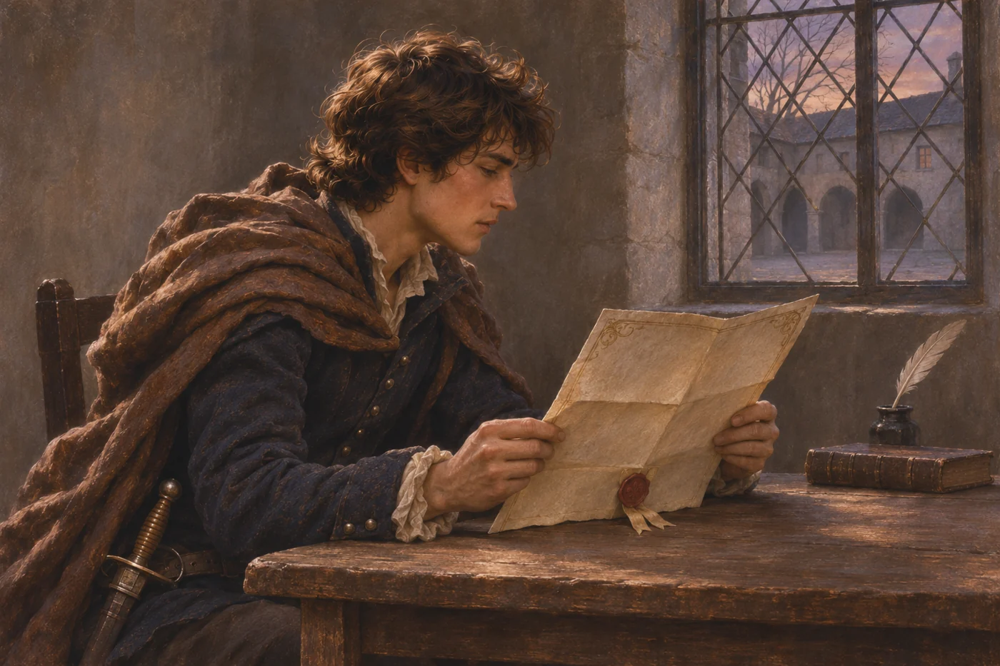
採用したフランス語電子本文の第1～67章とエピローグに基づく要約です。初出・初版画像との逐字対校、既刊邦訳との全文照合は未完。登場人物の発言や回想を、独立して立証された歴史事実とはしていません。続編・映像版の展開は補っていません。
読み解く手がかり
最初の印象から、関係は変わる
衝突した相手が、そのまま最後まで敵になるとは限りません。何を言ったかだけでなく、相手の傷や事情へどう応じたかを追うと、互いを見る目が変わる過程にも面白さがあります。
勇気と、行動の結果を一緒に見る
第6章で、ルイ十三世は四人に礼を言いたいとトレヴィルに伝えます。その一方で、争いを禁じる布告にも触れ、小階段から来るよう指示します。仲間を助けた勇気をたたえる言葉のそばに、戦いを公には扱いにくい宮廷の事情が見えます。
後のなりすましは、相手が誰と関係を持つか判断する意思を欺く行為でもあります。主人公の成功として笑って済ませず、協力を求められた侍女にどんな圧力や危険が及ぶかも考えられます。
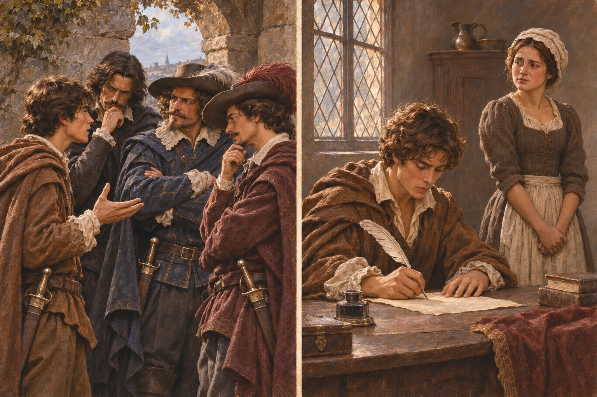
見たことと、思い込んだことを分ける
ダルタニャンは、目についたハンカチを拾って相手の事情へ踏み込み、別の場面ではコンスタンスの同行者を取り違えます。気づく速さと、正しく理解することは同じではありません。思い込みが解けた後、彼の行動がどう変わるかを読むこともできます。 後の場面でも、老人の証言、家主への疑い、酔った友人の話は、同じ確かさの情報ではありません。誰の目で見たことなのか、誰の説明なのかを分けると、人物への判断を急がずに読めます。 相手を気の毒に思う気持ちや強い確信があっても、それだけで話の裏付けが得られるわけではありません。語る人、信じる人、語り手の説明を分けて読むと、心が動く瞬間を確かめられます。
友情の脇にいる人にも目を向ける
四人の結束は魅力ですが、コンスタンスの判断や連絡も物語を支えています。一方、主人公たちには従僕へ暴力を振るう描写や、恋心のために家主の安否を忘れる身勝手さもあります。仲間への勇気と、他者への態度を一緒に見ると、英雄像を一色に塗らずに読めます。
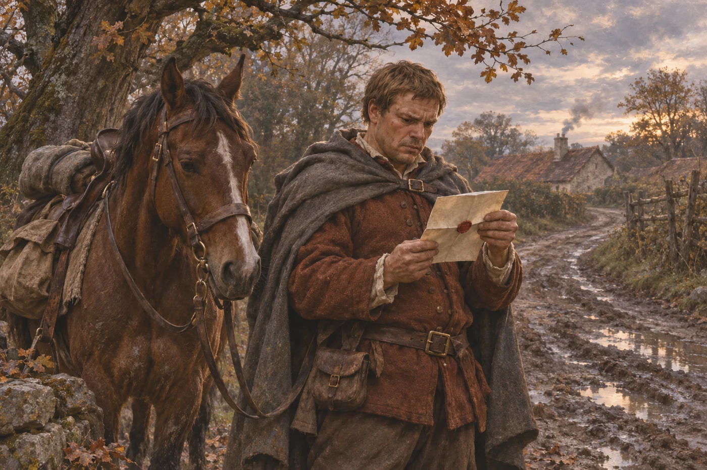
歴史小説として読む
実在の時代や人物を背景にしていても、会話や事件がそのまま歴史の記録というわけではありません。作品の人物がどう描かれているかと、史実として何が確認できるかを分ける読み方ができます。
成果の後ろに、誰の支えがあるか
最後に手紙を届ける人だけでなく、途中で仲間を先へ行かせる人、連絡する人、船や馬を手配する人がいます。舞踏会で注目される人物と、危機を越えるために働いた人物も同じではありません。目に見える成功の後ろへ目を向ける読み方ができます。ただし職人のように監視下で働かされる人もおり、すべてを自発的な協力とは言い切れません。 支える人が危険を引き受けるまでの経緯にも注目できます。断れる立場にあるかまで見ると、友情の場面にある別の面も見えてきます。
守りたい気持ちと、裁く権限を分ける
大切な人を傷つけられれば、怒りや報復したい気持ちが生まれることがあります。それでも、怒りの強さだけで相手を裁く資格が得られるでしょうか。自分が被害を受けた側にいるときほど、告発する立場と判断する立場を分けて考える手掛かりになります。
読後に考える問い
四人の友情を支える従僕や職人にも目を向けると、ダルタニャンたちの成功はどのように見えてくるでしょうか。
この作品を読んでどう感じましたか？
感じたことや気づいたことを、気軽にお寄せください。投稿内容は運営者が確認します。
感想を投稿する ↗Googleフォームが別のタブで開きます。作品名の入力が必要な場合があります。
出典・確認情報
採用本文：Project Gutenberg eBook 13951のフランス語電子本文（最終更新2024年10月28日）。既存の制作記録では全67章とエピローグの確認を行っています。今回の配置・開閉改訂での全文再通読は行っていません。1844年の初出・初版画像との逐字対校は未完です。日本での原作保護期間終了は、デュマ（1870年没）だけでなく共同制作のマケ（1888年没）も対象に、保守的な期間計算と戦時加算を含めて確認。米国での公開表示だけを日本の判定根拠にしていません。今回既刊邦訳は使用していません。現代訳、挿絵・写真・映像・商標等は別途確認が必要です。
第5章で青年と三銃士が対立から協力へ向く展開に着想した、AI生成の独自挿絵。人物の顔・服装、背景・光・配置は創作で、本文の特定場面や実在建築を正確に再現したものではありません。
登場人物17人の顔は、作品をもとにしたAI生成の創作イメージです。歴史上の人物も、本作の登場人物として描いた創作で、実在の肖像ではありません。アトス・ポルトス・アラミスは、既存の砦の挿絵をもとに、今回それぞれ左奥の炭色の服・中央の青い服・右の葡萄色の服の人物として編集上の対応を設けました。原典の年齢感や初登場時の衣装を厳密に再現したものではありません。
文章は採用したフランス語本文に基づく独自の紹介と批評です。登場人物の発言・回想・告発と、語り手が描く出来事を分けています。初版画像対校、転記差の由来、既刊邦訳との全文照合、実ブラウザーでの表示・操作は未確認。
以下を確認し、本文は本サイト独自の言葉で要約しています。解釈は原典の事実記述と区別しています。
- 確認根拠 ↗
- 確認根拠 ↗
- 確認根拠 ↗
- BnF・1844年原版書誌 ↗
- BnF・マケ人物典拠 ↗
- フランス軍事博物館・作品成立と共同制作 ↗
- 参照したフランス語電子本文：Project Gutenberg 13951 ↗
- 同電子版の書誌・更新日・米国での権利表示 ↗
- 国会図書館・三上訳1929年版 ↗
- 国会図書館・三上於菟吉の典拠 ↗
- 文化庁・保護期間延長Q&A ↗
- 文部科学省・フランス等の戦時加算日数 ↗
- フランス法・保護期間と共同著作 ↗
- 1849年版を底本とするWikisource転記・第1〜3章への入口 ↗
- CiNii・三上訳1929年版の所蔵書誌（同版19館、現物未確認） ↗
- 日本語Wikisource・三上訳の目次（確認した小序・3本文章は未作成） ↗
確認日：2026年11月4日（本文・独自挿絵確認。初版対校・実ブラウザー表示は未確認）。第三者の画像・写真の転載は行っていません。